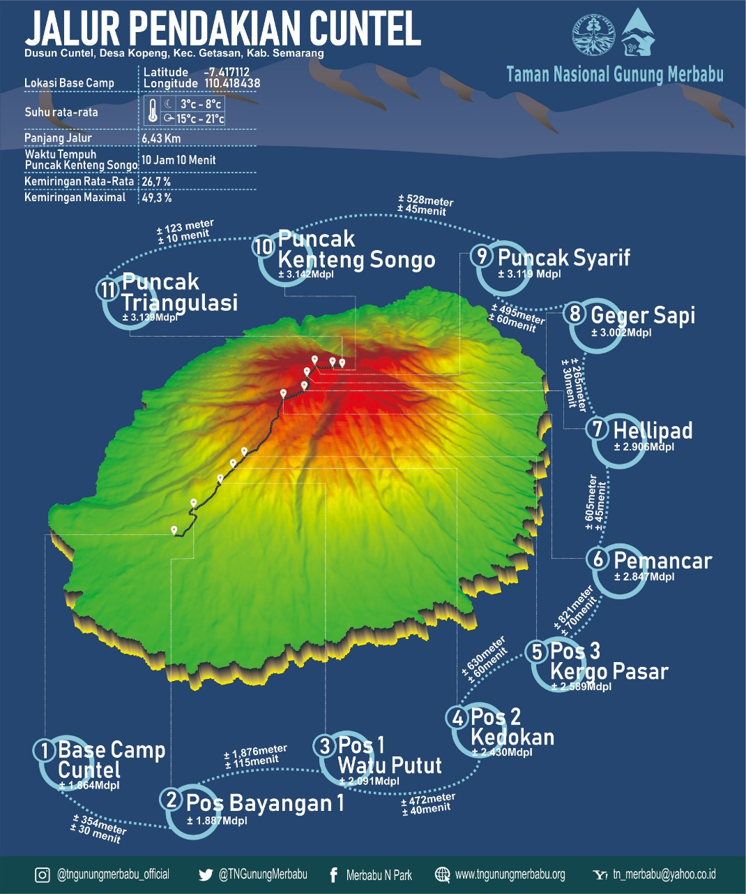

Deskripsi Umum Jalur Cuntel
Berlokasi tidak jauh dari Thekelan, Jalur Cuntel adalah salah satu pintu masuk pendakian Merbabu dari sisi utara. Jalur ini dikenal memiliki tanjakan yang cukup curam di awal perjalanan yang sering disebut 'Tanjakan PHP' oleh para pendaki. Meskipun menantang di awal, jalur ini menawarkan pemandangan yang indah dan trek yang lebih landai setelah melewati pos bayangan.
Informasi Kunci
- Lokasi Basecamp: Dusun Cuntel, Kopeng, Getasan, Semarang.
- Tingkat Kesulitan: Menengah.
- Estimasi Waktu Naik: 7-8 jam.
- Sumber Air: Terdapat di beberapa titik sebelum Pos 3.
- Atraksi Utama: Tanjakan PHP, Pos Bayangan.
Peta Jalur
Kalkulator Estimasi Waktu
Pilih kecepatan mendaki Anda untuk mendapatkan estimasi waktu yang lebih personal.
Hasil estimasi akan muncul di sini.
Rute Pendakian (Pos ke Pos)
Awal pendakian dari basecamp Cuntel akan langsung dihadapkan pada tanjakan terjal hingga Pos 1. Perjalanan selanjutnya menuju Pos 2, Pos 3, dan Pos Bayangan memiliki medan yang bervariasi antara hutan dan sedikit area terbuka. Jalur Cuntel nantinya akan bertemu dengan jalur utara lainnya sebelum mencapai area puncak Merbabu.